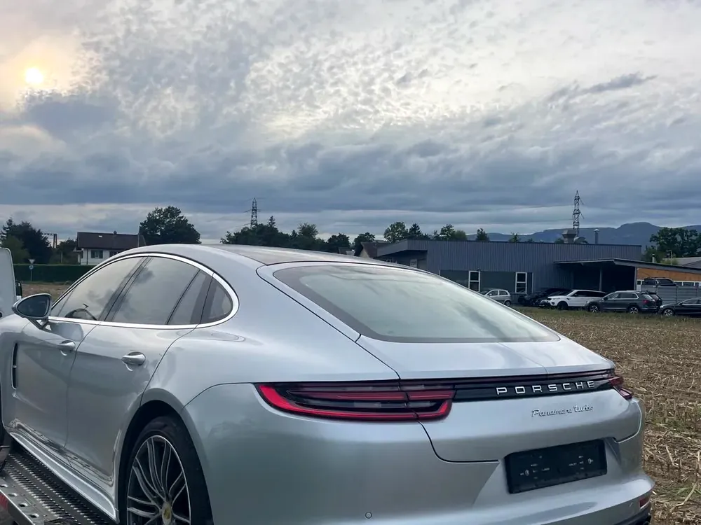

Importare un'auto in Svizzera: un percorso che conosciamo bene
L'importazione di un'auto in Svizzera e un processo che coinvolge diverse fasi burocratiche, fiscali e tecniche. Per chi non lo ha mai fatto, puo sembrare un labirinto di moduli, uffici e scadenze. Noi di TicinoTransport lo facciamo quotidianamente e conosciamo ogni passaggio nel dettaglio. Ti accompagniamo dall'inizio alla fine, occupandoci di tutta la documentazione e delle procedure necessarie affinche il tuo veicolo possa circolare regolarmente sulle strade svizzere.
Il nostro servizio e rivolto sia ai privati che acquistano un'auto all'estero, sia ai concessionari auto che importano veicoli regolarmente per la vendita. In entrambi i casi, garantiamo un processo fluido, tempi certi e la tranquillita di sapere che tutto viene gestito correttamente.
Importazione auto da Italia, Germania, Francia e Austria
La maggior parte delle importazioni che gestiamo proviene da quattro Paesi: Italia, Germania, Francia e Austria. Ognuno ha le proprie specificita documentali, ma il processo doganale svizzero e lo stesso. Ecco cosa facciamo per te:

Sdoganamento del veicolo
Il primo passo e lo sdoganamento. Il veicolo va dichiarato spontaneamente presso un ufficio doganale abilitato alle merci commerciali, non a un valico qualsiasi: prepariamo noi la dichiarazione d'importazione elettronica, la fattura o il contratto d'acquisto, la licenza di circolazione estera (anche se gia annullata) e il documento d'identita.
Ci occupiamo del calcolo e del pagamento dei tributi all'importazione: l'imposta sugli autoveicoli, pari al 4% del valore del veicolo, e l'IVA svizzera all'8.1%. Dal 1° gennaio 2024 l'imposta del 4% e dovuta anche dalle auto elettriche, che prima ne erano esentate. Sulle vetture di origine UE il dazio non si paga, se l'origine preferenziale e documentata.
A sdoganamento avvenuto la dogana rilascia il rapporto di perizia (modulo 13.20 A), con un emolumento di 20 franchi: e il documento che l'Ufficio della circolazione ti chiedera per immatricolare il veicolo.
Controllo tecnico e omologazione
Dopo lo sdoganamento, il veicolo deve superare il controllo tecnico presso l'Ufficio della circolazione del Canton Ticino (o del cantone di residenza). Ci assicuriamo che il veicolo sia conforme alle normative svizzere e, se necessario, coordiniamo le eventuali modifiche o adattamenti richiesti, come il cambio dei fari, l'aggiunta di catarifrangenti o la taratura del tachimetro in km/h.
Immatricolazione e targhe
Una volta superato il controllo tecnico, procediamo con l'immatricolazione svizzera. Prepariamo la documentazione per l'Ufficio della circolazione, gestiamo la richiesta delle targhe e ti consegniamo il veicolo pronto per circolare con licenza di circolazione e targhe svizzere. Per il periodo transitorio, possiamo anche procurare targhe provvisorie che permettono la circolazione temporanea durante l'iter di immatricolazione.
La sanzione CO2: la voce che molti scoprono troppo tardi
Sulle auto recenti puo aggiungersi la sanzione CO2. Non si paga in dogana: arriva dopo, dall'Ufficio federale dell'energia. Non e dovuta per i veicoli la cui prima immatricolazione all'estero risale a piu di 12 mesi prima della dichiarazione doganale, ne per quelli di almeno 6 mesi che al momento dell'importazione hanno superato i 5'000 km. Prima che tu compri ti diciamo se l'auto rientra nell'esenzione: su un modello nuovo questa voce puo cambiare completamente il conto.
Ti trasferisci in Svizzera? L'auto entra in franchigia
Chi sposta il domicilio in Svizzera puo importare la propria auto come masserizia di trasloco, senza dazio e senza IVA. Le condizioni sono tre: aver usato personalmente il veicolo all'estero per almeno sei mesi prima dell'entrata, dichiararlo alla dogana al primo passaggio del confine con il modulo 18.44 (Domanda/Dichiarazione d'imposizione per masserizie di trasloco), indicandolo nel riquadro Veicoli con il numero di telaio, e continuare a usarlo in Svizzera.
Le targhe svizzere vanno poi richieste all'ufficio cantonale della circolazione entro un anno dal trasferimento del domicilio. C'e un vincolo che spesso sfugge: il veicolo importato in franchigia non si puo rivendere nei dodici mesi successivi. E se l'auto la hai da meno di sei mesi, la franchigia non vale e si pagano i tributi ordinari.
Esportazione veicoli dalla Svizzera
Il servizio non si limita all'importazione. Gestiamo anche l'esportazione di veicoli dalla Svizzera verso l'estero. Che tu stia vendendo un'auto a un acquirente italiano, tedesco o francese, ci occupiamo della cancellazione dalle targhe svizzere, della documentazione doganale di uscita e di tutto il necessario per il trasferimento regolare del veicolo oltre confine.
Per i concessionari che vendono regolarmente all'estero, offriamo un servizio continuativo che semplifica enormemente la gestione amministrativa delle vendite internazionali.
Dalla Svizzera all'Italia: l'altro senso di marcia
Nell'altro senso i conti cambiano, perche la Svizzera non fa parte dell'Unione europea ne dell'unione doganale. All'ingresso in Italia si paga l'IVA italiana al 22%, calcolata sul valore attuale del veicolo e non sulla cifra scritta in fattura, piu il dazio, che per le automobili e del 10% e non e dovuto se l'origine preferenziale UE viene certificata con il modulo EUR.1. Dalla dogana si esce con la bolletta doganale, obbligatoria per immatricolare.
Poi comincia la nazionalizzazione, che passa da tre uffici in sequenza: la verifica fiscale dell'Agenzia delle Entrate, l'immatricolazione alla Motorizzazione e l'iscrizione al Pubblico Registro Automobilistico tenuto dall'ACI. Serve il certificato di conformita (COC) del veicolo. Anche in questa direzione il trasferimento di residenza da diritto alla franchigia, alle stesse condizioni di uso del veicolo.
Chi vende dalla Svizzera verso l'estero deve invece far radiare il veicolo dalle targhe svizzere: ce ne occupiamo noi, insieme ai documenti doganali di uscita. Italia, Germania, Francia e Austria sono le destinazioni che trattiamo piu spesso.